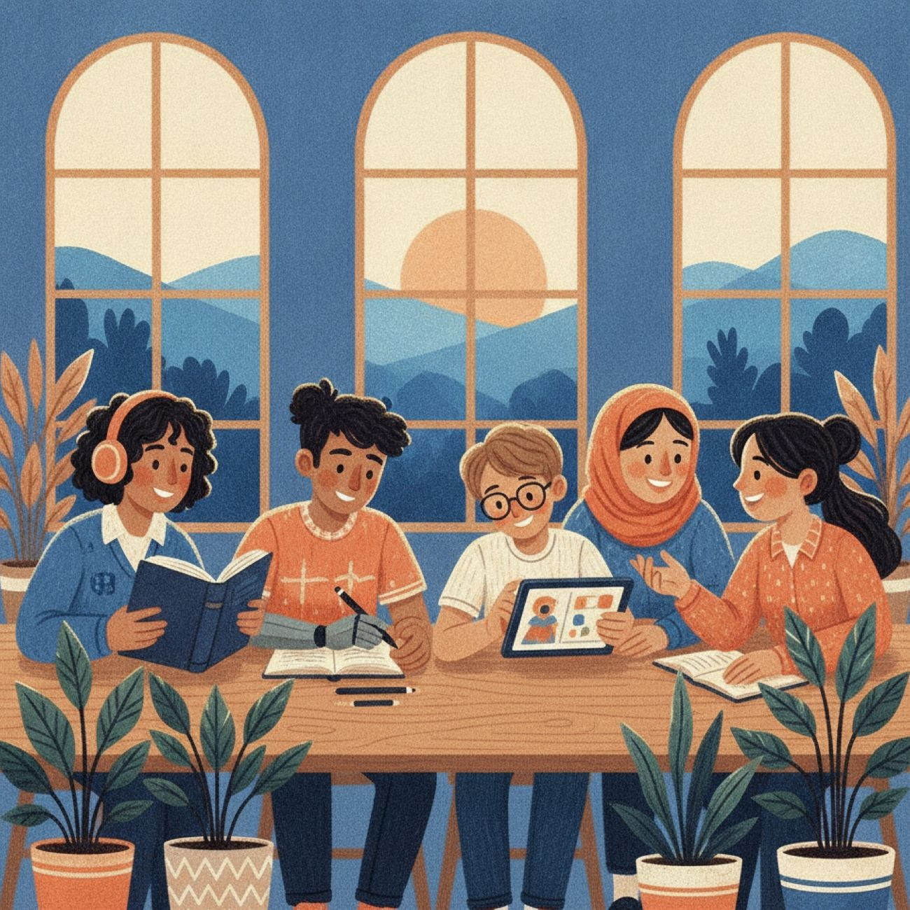
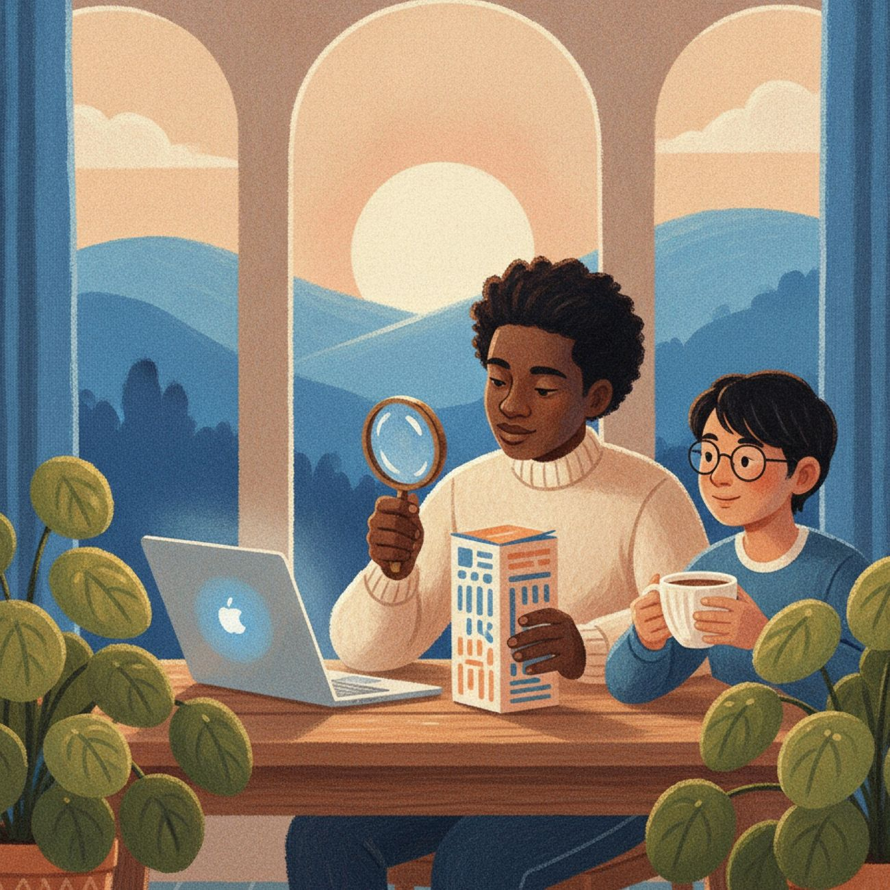

理解自闭症，从看见每一个人开始Understanding autism starts with seeing each person
可靠的信息，加上自闭症人士与家庭的真实经验。每项资料都注明来源和适用范围。Reliable information plus the lived experience of autistic people and families — every fact sourced and scoped.
内容不能用于自行诊断。有疑问时，请咨询儿科医生、学校评估团队或合格的专业人员。Not for self-diagnosis. With concerns, please consult a paediatrician, school evaluation team or qualified professional.

我们怎样写每一篇How we write
每一条资料，都能追溯到原始来源Every fact traces back to its original source
优先引用官方与研究机构资料，用自己的话改写，保留范围与不确定性。We cite official and research sources first, in our own words, keeping scope and uncertainty intact.
查看资料来源与更新规则See our sources & update rules
事实核验Fact-check
阅读：识别不可靠宣传Read: spotting unreliable claims
看到这些承诺，请先停一停If you see these promises, pause
美国 FDA 提醒：未经证实的“治疗”产品会误导消费者，也可能延误合适的支持。The FDA warns that unproven “treatments” mislead people and can delay the right support.

阅读：识别不可靠宣传Read: spotting unreliable claims
“治愈自闭症Cures autism”
“快速见效Fast results”
“人人适用Works for everyone”
“无需专业评估No evaluation needed”
最新动态Latest
新闻与数据解读News & data, explained
帮我们核验下一条资料Help us verify the next fact
我们最需要资料核验和中英文内容志愿者。We especially need fact-checkers and bilingual volunteers.